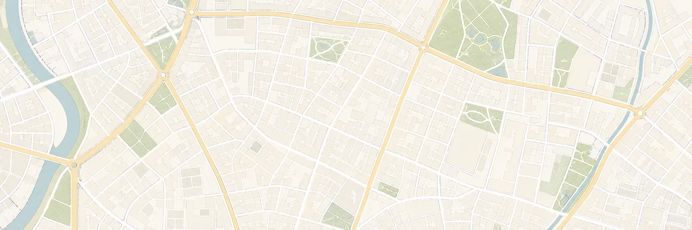

01｜你可能漏掉的一步
店開了，
地圖上的位置卻還是空的。
很多老闆自己上網就能辦完設立登記。流程不一定難，難的是開店之後，沒有店面資料、沒有餐點照片，也沒有讓客人找到你的入口。
登記，是合法開店的起點；
被找到，才是生意的起點。


02｜方案內容・限量100位
商業登記＋行銷曝光，
一次到位。
委託佳赫辦理商業設立登記，同步完成新店被看見的第一步。
- 01
商業設立登記
流程、文件與申請由專業人員協助處理。
- 02
Google Map 商家設定
完成商家建檔、商品與服務項目上架，建立基礎搜尋能見度。
- 03
商業攝影10張
到店拍攝約1.5至2小時，交付10張可用於Google、社群與開幕宣傳的照片。
重要活動條件
查看目前是否還有名額 →
本活動適用於委託佳赫辦理商業設立登記的台南餐飲業者。
03｜先確認是否適合
名額有限，
我們先把條件說清楚。
適合你，如果你：
- 準備在台南開設餐飲店
- 正在研究或準備商業登記
- 希望有人協助處理文件與流程
- 需要Google商家與開幕形象照片
目前不適合，如果你：
- 店家設立地點不在台南
- 不是餐飲相關產業
- 已完成登記，只想單獨索取攝影
- 尚未確定開店地點與時間
04｜加入後會發生什麼
四個步驟，
把下一步走清楚。
- 1
加入官方LINE
輸入「100商家」。
- 2
確認資格與名額
提供產業、設立地點及目前籌備進度。
- 3
辦理商業設立登記
佳赫協助確認文件與申請流程。
- 4
安排地圖建置與攝影
依照實際開店進度安排後續服務。
05｜為什麼是佳赫
懂規則，
也懂開店。
開店是一場仗。有人熟悉帳冊與規則，你才能把心力留給產品、客人與現場。
- 35年在地稅務與記帳經驗
- 台南東區、麻豆兩處服務據點
- 三位執業記帳士共同經營
- 從商業設立延伸至新店基礎曝光
06｜常見問題
決定以前，
先把疑問問完。
活動是否完全免費？
Google Map商家設定與10張商業攝影屬活動贈送內容；商業設立登記的服務費用與必要規費，將由佳赫依實際案件說明。
已經完成商業登記，也能參加嗎？
本活動主要提供給委託佳赫辦理商業設立登記的台南餐飲業者。若已完成登記，可先加入LINE說明狀況，由團隊協助判斷其他服務方式。
攝影何時進行？可以拍什麼？
將依店面與開幕進度安排，到店拍攝約1.5至2小時，以店面、餐點及開幕宣傳所需內容為主。
加入LINE之後，是否代表立即簽約？
不會。加入後會先確認設立地點、產業類型、籌備進度及目前名額，再說明適合的辦理方式。
首輪30位與募集100位有什麼不同？
計畫總目標為100家，首輪先開放30位，以確保登記、地圖建置與攝影安排的服務品質。
首輪募集30位中
店準備好了，
也讓客人找得到。
符合台南餐飲業與商業設立需求，可以先加入LINE確認資格與名額。
資格：餐飲業＋設立在台南
加入官方LINE，確認我的名額 →加入後請輸入「100商家」
先確認資格與名額，不代表立即簽約。